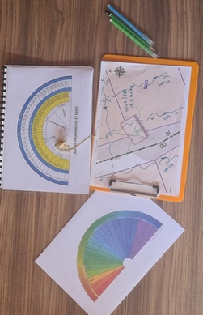
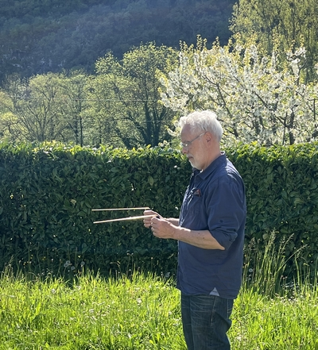
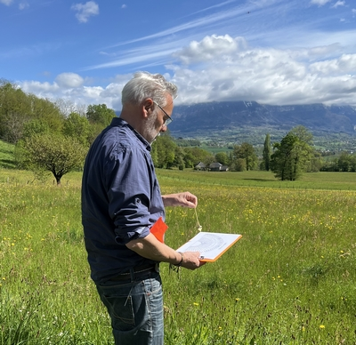

Sur le terrain
Avant d’intervenir sur site, je réalise une pré-étude grâce aux plans que vous allez me communiquer.

Puis, en arrivant sur le terrain, je fais un état des lieux de l’environnement de recherche : canalisations, passage des réseaux d’eau, électricité, drainage, puits ou forage sur les parcelles alentours.
Ensuite, j’explore le terrain et réalise mon ancrage afin de me rendre sensible à toutes les veines d'eau souterraines qui passent sous mes pas.
À l’aide de mes baguettes de radiesthésie, je recherche la ou les veines d’eau avec le plus gros débit et, éventuellement, celles qui se croisent.

Je place des jalons matérialisant chaque lit et les rives de la veine d’eau détectée.
J’estime la profondeur et le débit de la ou des veines d'eau.

Enfin, je matérialise le point de forage idéal et effectue quelques photos pour l'étude.
A l’issue de ces relevés, j’envoie un rapport complet avec mes conclusions, utiles à la prise de décision sur les travaux à entreprendre.